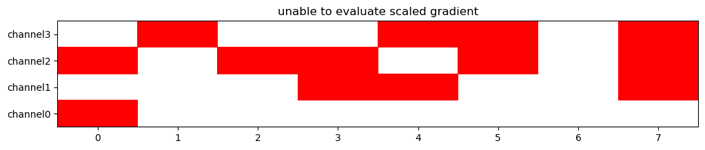

Note
Click here to download the full example code
LMER warning grids
The modeling at each cell in a fitted LMERFitGrid may generate various numbers and types of lme4::lmer warnings.
The examples here illustrate how to collect and visualize them with fitgrid utilities.
import fitgrid
To illustrate, we use a small random data set and silly model to generate lots of different warnings.
epochs_fg = fitgrid.generate(n_samples=8, n_channels=4, seed=32)
lmer_grid = fitgrid.lmer(
epochs_fg,
LHS=epochs_fg.channels,
RHS="categorical + (continuous | categorical)",
parallel=True,
n_cores=2,
quiet=True,
)
fitgrid.utils.lmer.get_lmer_warnings()
The get_lmer_warnings() utility collects the warnings and
returns them as an ordinary Python dictionary. Each warning message
is a key and its value is a time x channel indicator grid of 0s, and
1s: the 1s show which grid cells have the warning.
lmer_warnings = fitgrid.utils.lmer.get_lmer_warnings(lmer_grid)
for key, val in lmer_warnings.items():
print(key, "\n", val)
Out:
unable to evaluate scaled gradient
channel0 channel1 channel2 channel3
time
0 1 0 1 0
1 0 0 0 1
2 0 0 1 0
3 0 1 1 0
4 0 1 0 1
5 0 0 1 1
6 0 0 0 0
7 0 1 1 1
boundary (singular) fit: see ?isSingular
channel0 channel1 channel2 channel3
time
0 0 1 0 1
1 1 1 1 0
2 1 1 0 1
3 1 0 0 1
4 1 0 0 0
5 1 1 0 0
6 1 1 1 1
7 1 0 0 0
Model failed to converge: degenerate Hessian with 1 negative eigenvalues
channel0 channel1 channel2 channel3
time
0 1 0 0 0
1 0 0 0 1
2 0 0 0 0
3 0 1 0 0
4 0 1 0 1
5 0 0 1 0
6 0 0 0 0
7 0 1 1 0
Hessian is numerically singular: parameters are not uniquely determined
channel0 channel1 channel2 channel3
time
0 0 0 1 0
1 0 0 0 0
2 0 0 1 0
3 0 0 0 0
4 0 0 0 0
5 0 0 0 1
6 0 0 0 0
7 0 0 0 1
Model failed to converge: degenerate Hessian with 2 negative eigenvalues
channel0 channel1 channel2 channel3
time
0 0 0 0 0
1 0 0 0 0
2 0 0 0 0
3 0 0 1 0
4 0 0 0 0
5 0 0 0 0
6 0 0 0 0
7 0 0 0 0
fitgrid.utils.lmer.get_lmer_warnings()
The plot_lmer_warnings() utility visualizes the warning grids.
The warnings can be displayed in different ways with which=... keyword argument.
The default (which="each") plots each type of warning in a separate figure.
- 


Out:
unable to evaluate scaled gradient
boundary (singular) fit: see ?isSingular
Model failed to converge: degenerate Hessian with 1 negative eigenvalues
Hessian is numerically singular: parameters are not uniquely determined
Model failed to converge: degenerate Hessian with 2 negative eigenvalues
all
Stacking all the warning grids into one summary grid (which="all")
shows immediately which grid cells have warnings and which do not.
fitgrid.utils.lmer.plot_lmer_warnings(
lmer_grid,
which="all",
)

Out:
all
Specific warnings can be selected by matching a portion of the warning message text.
fitgrid.utils.lmer.plot_lmer_warnings(lmer_grid, which=["Hessian"])


Out:
Model failed to converge: degenerate Hessian with 1 negative eigenvalues
Hessian is numerically singular: parameters are not uniquely determined
Model failed to converge: degenerate Hessian with 2 negative eigenvalues
Warning
Watch out for typos when selecting LMER warnings to plot, the text must match some part of the warning message exactly.
This selection finds no convergence warnings.
fitgrid.utils.lmer.plot_lmer_warnings(lmer_grid, which=["converges"])
Out:
/home/runner/work/fitgrid/fitgrid/fitgrid/utils/lmer.py:276: UserWarning: warning pattern 'converges' not found
warnings.warn(f"warning pattern '{pattern}' not found")
/home/runner/work/fitgrid/fitgrid/fitgrid/utils/lmer.py:285: UserWarning: no model warnings match ['converges']
warnings.warn(f"no model warnings match {which}")
They were missed because “converges” doesn’t match “converge:” or “converge ” in the warning messages.
fitgrid.utils.lmer.plot_lmer_warnings(lmer_grid, which=["converge"])

Out:
Model failed to converge: degenerate Hessian with 1 negative eigenvalues
Model failed to converge: degenerate Hessian with 2 negative eigenvalues
Total running time of the script: ( 0 minutes 7.277 seconds)